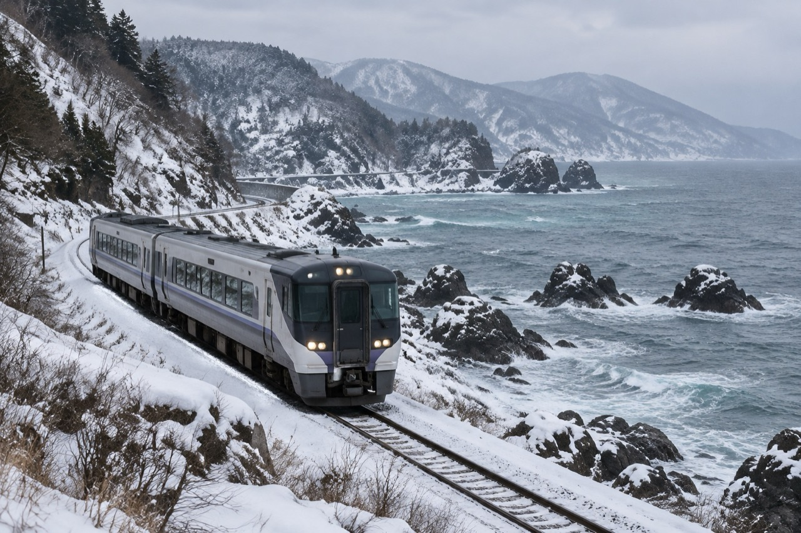

<template>
<link rel="stylesheet" href="../../assets/base.css">
<style>
@font-face{font-family:GenSekiGothic;src:url('../../assets/fonts/GenSekiGothic2TW-B.subset.woff2') format('opentype');font-weight:700}
#root{position:absolute;inset:0;width:100%;height:100%;overflow:hidden}
#root,#root *{font-family:GenSekiGothic,sans-serif;font-weight:700}
.dayrail{position:absolute;left:1050px;top:153px;width:784px;height:42px;display:flex;gap:18px;align-items:center;font-size:24px;line-height:1;z-index:5}
.dayrail span{width:80px;border-bottom:3px solid var(--line);padding:0 0 9px;color:var(--muted)}
.dayrail span.past{border-color:var(--ink)}
.dayrail span.today{color:var(--accent);border-color:var(--accent)}
.tagbox{position:absolute;left:86px;top:342px}
.rows{position:absolute;left:86px;top:414px;width:748px}
.scene .row{padding:10px 0;gap:22px}.scene .row .when{min-width:112px;font-size:28px}.scene .row .what{font-size:30px}
.note{position:absolute;left:86px;top:878px;width:748px;font-size:25px;line-height:1.45;color:var(--accent)}
.photo-frame{left:880px;top:342px;width:954px;height:537px;border-radius:6px}
.inset{position:absolute;left:1470px;top:640px;width:384px;height:256px;margin:0;overflow:hidden;border:8px solid var(--bg);border-radius:6px;box-shadow:0 18px 40px rgba(23,57,74,.28);background:var(--ink)}
.inset img{width:100%;height:100%;object-fit:cover;display:block}
</style>
<div id="root" data-composition-id="04-day-two" data-duration="16.35" data-width="1920" data-height="1080"><div class="scene">
<div class="dayrail" aria-label="八日旅程進度"><span class="past">DAY 1</span><span class="today">DAY 2</span><span class="future">DAY 3</span><span class="future">DAY 4</span><span class="future">DAY 5</span><span class="future">DAY 6</span><span class="future">DAY 7</span><span class="future">DAY 8</span></div>
<p class="eyebrow">SAN&#x27;IN COAST LINE</p><p class="date">01.12 TUE</p><div class="rule"></div>
<p class="day">DAY 2</p><h1 class="heading" id="h4">輕裝轉乘，抵達城崎</h1>
<div class="tagbox" id="t4"><p class="tag">已訂：川口屋（含早晚餐）</p></div>
<div class="rows"><div class="row" id="r4-0"><span class="when">08:05</span><span class="what">境線刷 IC 卡 → 08:56 米子</span></div><div class="row" id="r4-1"><span class="when">09:00</span><span class="what">米子站領 e5489 特急票</span></div><div class="row" id="r4-2"><span class="when">12:56</span><span class="what">鳥取轉濱風 4 號</span></div><div class="row" id="r4-3"><span class="when">14:11</span><span class="what">抵達城崎溫泉</span></div><div class="row" id="r4-4"><span class="when">16:00</span><span class="what">外湯一座（一之湯）</span></div><div class="row" id="r4-5"><span class="when">18:00</span><span class="what">川口屋晚餐</span></div></div>
<figure class="photo-frame" id="p4"></figure>
<figure class="inset" id="i4"></figure>
<p class="note" id="n4">每人 ¥6,470（淡季）・12/12 10:00 開賣</p><p class="page-number">04 / 12</p>
</div></div><script>(()=>{
const C=window.TL.scenes['day-two'];const D=C.duration;const tl=gsap.timeline({paused:true});
tl.fromTo('#h4',{y:24,opacity:0},{y:0,opacity:1,duration:.8,ease:'power3.out'},C.title);
tl.fromTo('#t4',{y:16,opacity:0},{y:0,opacity:1,duration:.6,ease:'power3.out'},C.enter+.45);
tl.fromTo('#p4',{x:30,opacity:0},{x:0,opacity:1,duration:.9,ease:'power3.out'},C.enter+.2);
tl.fromTo('#pi4',{scale:1.08,xPercent:1.5},{scale:1,xPercent:0,duration:D,ease:'none'},0);
tl.fromTo('#r4-0',{y:22,opacity:0},{y:0,opacity:1,duration:.6,ease:'power3.out'},Math.max(.7,C.clauses[1].at));tl.fromTo('#r4-1',{y:22,opacity:0},{y:0,opacity:1,duration:.6,ease:'power3.out'},Math.max(.7,C.clauses[2].at));tl.fromTo('#r4-2',{y:22,opacity:0},{y:0,opacity:1,duration:.6,ease:'power3.out'},Math.max(.7,C.clauses[3].at));tl.fromTo('#r4-3',{y:22,opacity:0},{y:0,opacity:1,duration:.6,ease:'power3.out'},Math.max(.7,C.clauses[4].at));tl.fromTo('#r4-4',{y:22,opacity:0},{y:0,opacity:1,duration:.6,ease:'power3.out'},Math.max(.7,C.clauses[6].at));tl.fromTo('#r4-5',{y:22,opacity:0},{y:0,opacity:1,duration:.6,ease:'power3.out'},Math.max(.7,C.clauses[7].at));
tl.fromTo('#i4',{opacity:0,scale:.9,rotation:-3},{opacity:1,scale:1,rotation:-1.5,duration:.8,ease:'back.out(1.4)'},C.clauses[5].at);tl.fromTo('#ii4',{scale:1.08},{scale:1,duration:D-C.clauses[5].at,ease:'none'},C.clauses[5].at);
tl.fromTo('#n4',{opacity:0},{opacity:1,duration:.6,ease:'power2.out'},C.clauses[7].at);
tl.to({},{duration:D},0);
window.__timelines['04-day-two']=tl;
})();</script></template>
